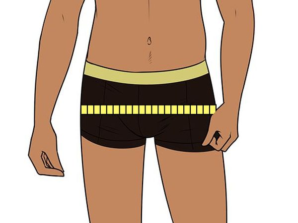
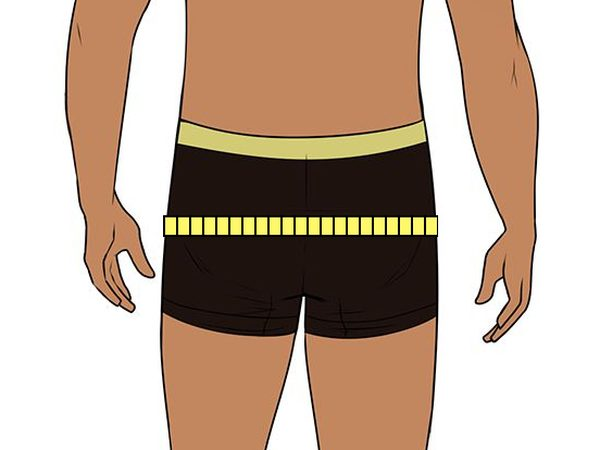
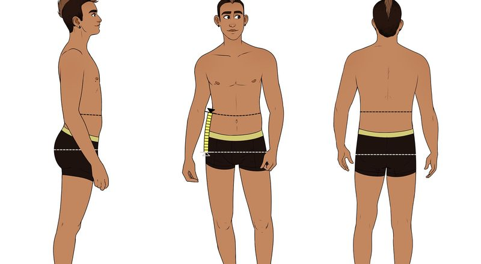
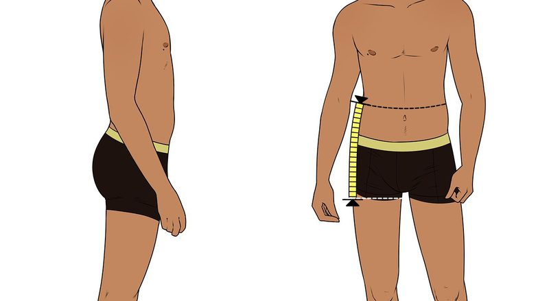
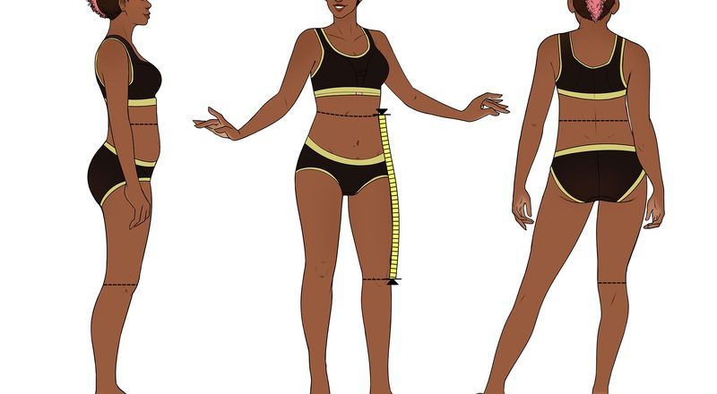
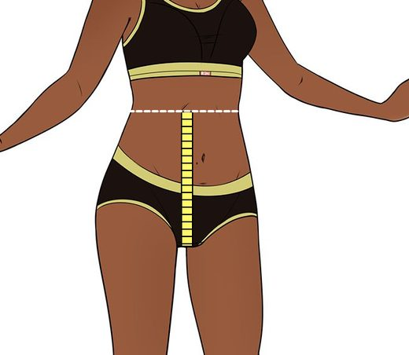

Prendre ses mesures
Le formulaire est prérempli à partir du tableau des tailles ci-dessous : les neuf mesures de chaque taille et de chaque stature y figurent.
| Taille | Tour de taille | Tour de taille, partie dos | Tour de bassin | Tour de bassin, partie dos | Taille - bassin | Taille - haut de cuisse | Taille - genou | Longueur d’enfourchure | Enfourchure, partie devant |
|---|---|---|---|---|---|---|---|---|---|
| Stature Petite (170 cm) | |||||||||
| 44 | 76 | 38,5 | 97 | 53,5 | 25,5 | 32,5 | 61 | 81 | 38 |
| 46 | 80 | 40,5 | 101 | 55,5 | 25,5 | 32,5 | 61 | 83 | 39 |
| 48 | 84 | 42,5 | 105 | 57,5 | 26 | 32,5 | 61 | 85 | 40 |
| 50 | 88 | 44,5 | 109 | 60 | 26 | 32,5 | 61 | 87 | 41 |
| 52 | 92 | 46,5 | 113 | 62 | 26 | 32,5 | 61 | 89 | 42 |
| 54 | 98 | 49,5 | 119 | 65,5 | 26,5 | 32,5 | 61 | 92 | 43 |
| 56 | 104 | 52,5 | 124 | 68 | 26,5 | 32,5 | 61 | 94,5 | 44,5 |
| 58 | 110 | 55,5 | 129 | 71 | 27 | 32,5 | 61 | 97 | 45,5 |
| 60 | 116 | 58,5 | 134 | 73,5 | 27 | 32,5 | 61 | 99,5 | 47 |
| 62 | 122 | 61,5 | 138,5 | 76 | 27 | 32,5 | 61 | 102 | 48 |
| Stature Moyenne (178 cm) | |||||||||
| 44 | 76 | 38,5 | 97 | 53,5 | 27 | 34 | 64 | 85 | 40 |
| 46 | 80 | 40,5 | 101 | 55,5 | 27 | 34 | 64 | 87 | 41 |
| 48 | 84 | 42,5 | 105 | 57,5 | 27 | 34 | 64 | 89 | 42 |
| 50 | 88 | 44,5 | 109 | 60 | 27,5 | 34 | 64 | 91 | 43 |
| 52 | 92 | 46,5 | 113 | 62 | 27,5 | 34 | 64 | 93 | 44 |
| 54 | 98 | 49,5 | 119 | 65,5 | 27,5 | 34 | 64 | 96 | 45 |
| 56 | 104 | 52,5 | 124 | 68 | 28 | 34 | 64 | 98,5 | 46,5 |
| 58 | 110 | 55,5 | 129 | 71 | 28 | 34 | 64 | 101 | 47,5 |
| 60 | 116 | 58,5 | 134 | 73,5 | 28,5 | 34 | 64 | 103,5 | 49 |
| 62 | 122 | 61,5 | 138,5 | 76 | 28,5 | 34 | 64 | 106 | 50 |
| Stature Grande (186 cm) | |||||||||
| 44 | 76 | 38,5 | 97 | 53,5 | 28 | 35,5 | 67 | 88,5 | 41,5 |
| 46 | 80 | 40,5 | 101 | 55,5 | 28 | 35,5 | 67 | 90,5 | 42,5 |
| 48 | 84 | 42,5 | 105 | 57,5 | 28,5 | 35,5 | 67 | 92,5 | 43,5 |
| 50 | 88 | 44,5 | 109 | 60 | 28,5 | 35,5 | 67 | 94,5 | 44,5 |
| 52 | 92 | 46,5 | 113 | 62 | 28,5 | 35,5 | 67 | 96,5 | 45,5 |
| 54 | 98 | 49,5 | 119 | 65,5 | 29 | 35,5 | 67 | 99,5 | 46,5 |
| 56 | 104 | 52,5 | 124 | 68 | 29 | 35,5 | 67 | 102 | 48 |
| 58 | 110 | 55,5 | 129 | 71 | 29,5 | 35,5 | 67 | 104,5 | 49 |
| 60 | 116 | 58,5 | 134 | 73,5 | 29,5 | 35,5 | 67 | 107 | 50 |
| 62 | 122 | 61,5 | 138,5 | 76 | 30 | 35,5 | 67 | 109 | 51 |
Les numéros de taille sont les numéros français ; les mesures suivent la grille de la norme européenne des tailles de vêtements.
Ces tailles standard décrivent une silhouette moyenne, et peu de personnes y correspondent exactement. Vous pouvez donc corriger chacune des mesures : plus vous en corrigez, plus le bermuda sera sur mesure.
Il vous faut un mètre ruban, une ficelle, si possible l’aide d’une autre personne, et environ 10 minutes. Les mesures marquées « à vérifier » sont les plus importantes.
Pour les hommes
Neuf mesures suffisent. Prenez-les sur vous ou sur la personne concernée, en sous-vêtements ou avec des vêtements très fins, le mètre ruban à plat contre le corps, sans serrer.
À vérifier en priorité : tour de taille, tour de bassin, taille - haut de cuisse, longueur d’enfourchure.
Le formulaire est prérempli à partir du tableau des tailles ci-dessous : les neuf mesures de chaque taille et de chaque stature y figurent.
| Taille | Tour de taille | Tour de taille, partie dos | Tour de bassin | Tour de bassin, partie dos | Taille - bassin | Taille - haut de cuisse | Taille - genou | Longueur d’enfourchure | Enfourchure, partie devant |
|---|---|---|---|---|---|---|---|---|---|
| Stature Petite (160 cm) | |||||||||
| 34 | 64 | 32,5 | 88 | 45,5 | 23 | 26 | 57 | 64,5 | 32 |
| 36 | 68 | 34,5 | 92 | 47,5 | 23 | 26,5 | 57 | 66,5 | 33 |
| 38 | 72 | 36,5 | 96 | 49,5 | 23,5 | 27 | 57 | 68,5 | 34 |
| 40 | 76 | 38,5 | 100 | 51,5 | 23,5 | 27 | 57 | 70,5 | 35 |
| 42 | 80 | 40,5 | 104 | 53,5 | 24 | 27,5 | 57 | 72,5 | 36 |
| 44 | 84 | 42,5 | 108 | 55,5 | 24,5 | 28 | 57 | 74,5 | 37 |
| 46 | 88 | 44,5 | 112 | 57,5 | 24,5 | 28 | 57 | 76,5 | 38 |
| 48 | 94 | 47,5 | 117 | 60,5 | 25 | 28,5 | 57 | 79 | 39 |
| 50 | 100 | 50,5 | 122 | 63 | 25,5 | 29 | 57 | 81,5 | 40,5 |
| 52 | 106 | 53,5 | 127 | 65,5 | 26 | 29,5 | 57 | 84 | 41,5 |
| Stature Moyenne (168 cm) | |||||||||
| 34 | 64 | 32,5 | 88 | 45,5 | 24 | 27,5 | 60 | 68 | 34 |
| 36 | 68 | 34,5 | 92 | 47,5 | 24,5 | 28 | 60 | 70 | 35 |
| 38 | 72 | 36,5 | 96 | 49,5 | 24,5 | 28 | 60 | 72 | 36 |
| 40 | 76 | 38,5 | 100 | 51,5 | 25 | 28,5 | 60 | 74 | 37 |
| 42 | 80 | 40,5 | 104 | 53,5 | 25,5 | 29 | 60 | 76 | 38 |
| 44 | 84 | 42,5 | 108 | 55,5 | 25,5 | 29 | 60 | 78 | 39 |
| 46 | 88 | 44,5 | 112 | 57,5 | 26 | 29,5 | 60 | 80 | 40 |
| 48 | 94 | 47,5 | 117 | 60,5 | 26,5 | 30 | 60 | 82,5 | 41 |
| 50 | 100 | 50,5 | 122 | 63 | 26,5 | 30,5 | 60 | 85 | 42,5 |
| 52 | 106 | 53,5 | 127 | 65,5 | 27 | 31 | 60 | 87,5 | 44 |
| Stature Grande (176 cm) | |||||||||
| 34 | 64 | 32,5 | 88 | 45,5 | 25,5 | 29 | 63 | 71,5 | 36 |
| 36 | 68 | 34,5 | 92 | 47,5 | 25,5 | 29 | 63 | 73,5 | 37 |
| 38 | 72 | 36,5 | 96 | 49,5 | 26 | 29,5 | 63 | 75,5 | 38 |
| 40 | 76 | 38,5 | 100 | 51,5 | 26,5 | 30 | 63 | 77,5 | 39 |
| 42 | 80 | 40,5 | 104 | 53,5 | 26,5 | 30 | 63 | 79,5 | 40 |
| 44 | 84 | 42,5 | 108 | 55,5 | 26,5 | 30,5 | 63 | 81,5 | 41 |
| 46 | 88 | 44,5 | 112 | 57,5 | 27 | 31 | 63 | 83,5 | 42 |
| 48 | 94 | 47,5 | 117 | 60,5 | 27,5 | 31,5 | 63 | 86 | 43,5 |
| 50 | 100 | 50,5 | 122 | 63 | 28 | 32 | 63 | 88,5 | 44,5 |
| 52 | 106 | 53,5 | 127 | 65,5 | 28,5 | 32,5 | 63 | 91 | 46 |
Les numéros de taille sont les numéros français ; les mesures suivent la grille de la norme européenne des tailles de vêtements.
Ces tailles standard décrivent une silhouette moyenne, et peu de personnes y correspondent exactement. Vous pouvez donc corriger chacune des mesures : plus vous en corrigez, plus le bermuda sera sur mesure.
Il vous faut un mètre ruban, une ficelle, si possible l’aide d’une autre personne, et environ 10 minutes. Les mesures marquées « à vérifier » sont les plus importantes.
Pour les femmes
Neuf mesures suffisent. Prenez-les sur vous ou sur la personne concernée, en sous-vêtements ou avec des vêtements très fins, le mètre ruban à plat contre le corps, sans serrer.
À vérifier en priorité : tour de taille, tour de bassin, taille - haut de cuisse, longueur d’enfourchure.
Les mesures reprennent celles de FreeSewing (bloc de pantalon Titan).
Comment prendre vos mesures
Avant de commencer : la ficelle
Nouez une ficelle (ou un élastique fin) autour de votre taille, à l’endroit le plus creux, en général un peu au-dessus du nombril. Elle doit être bien horizontale, ajustée sans serrer, et rester en place jusqu’à la fin des mesures. Penchez-vous sur le côté une ou deux fois : elle se placera d’elle-même dans le creux de la taille.
Pourquoi ? Presque toutes les mesures du bermuda partent de la taille : taille - bassin, taille - haut de cuisse, taille - genou, et surtout l’enfourchure. Or la taille n’est marquée nulle part sur le corps, et on ne la retrouve jamais exactement au même endroit d’une mesure à l’autre. Avec la ficelle, toutes les mesures partent de la même ligne. C’est la condition d’un bermuda qui tombe bien à l’enfourchure : quelques centimètres d’écart sur cette ligne suffisent à le faire tirer ou pocher.
Ne vous inquiétez pas si vous portez vos bermudas plus bas : le patron place déjà la ceinture 4 cm sous la taille. Mesurez toujours à la ficelle.











Quelqu’un coud pour vous ?
Prenez vos mesures avec ce guide, saisissez-les sur la page du patron, puis cliquez sur « Partager ». La personne qui coud recevra un lien qui ouvre le patron déjà réglé à vos mesures. Le lien ne passe par aucun serveur : vos mesures ne sont envoyées qu’à elle.
Schémas des mesures : FreeSewing (freesewing.org), licence MIT.
Le guide de couture est en cours de rédaction.